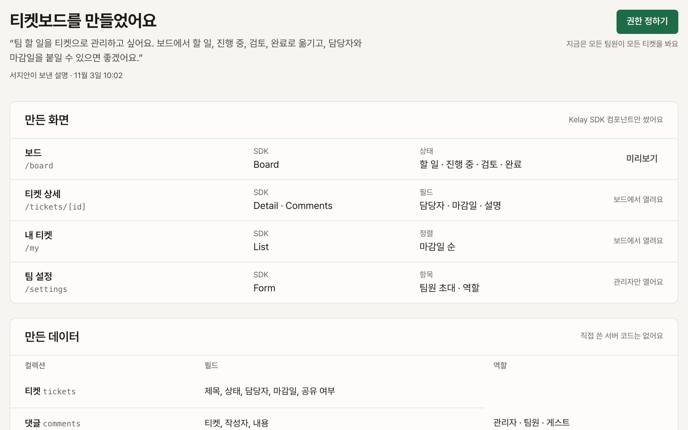
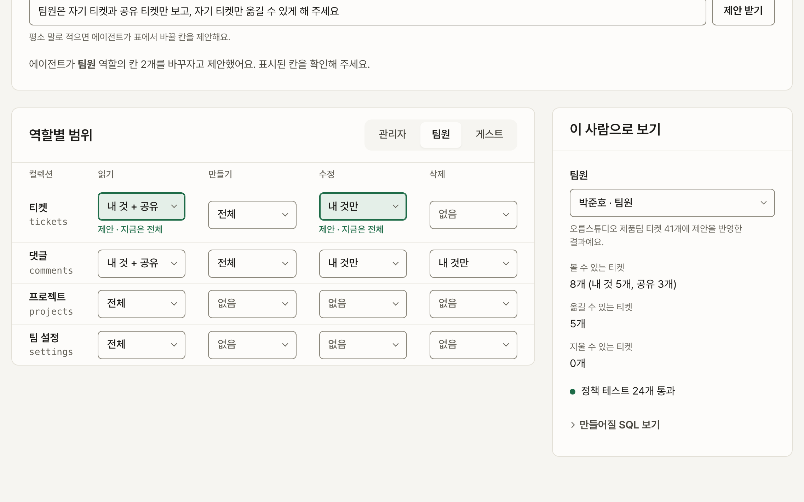
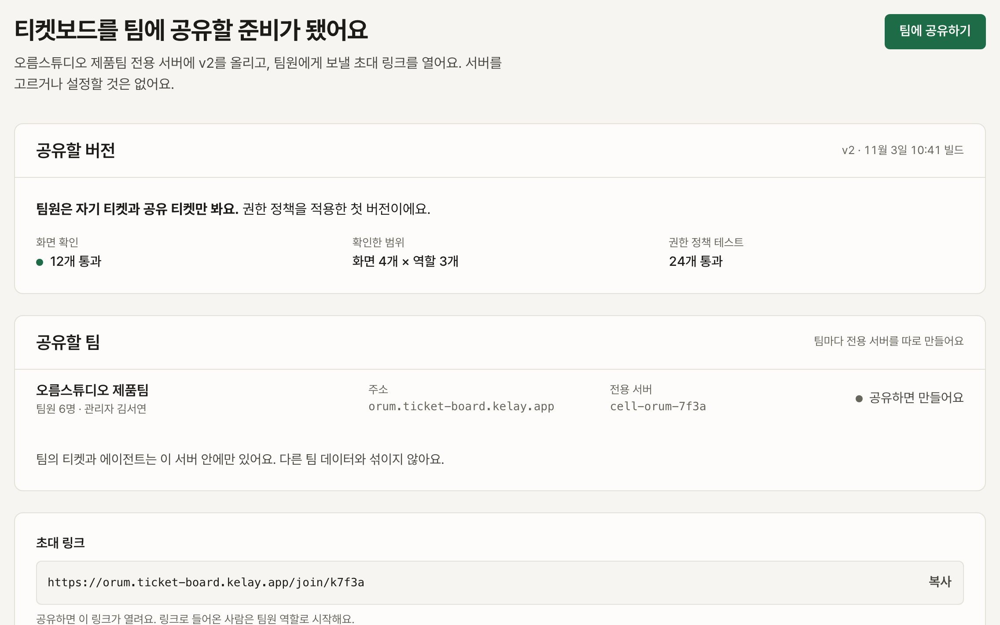
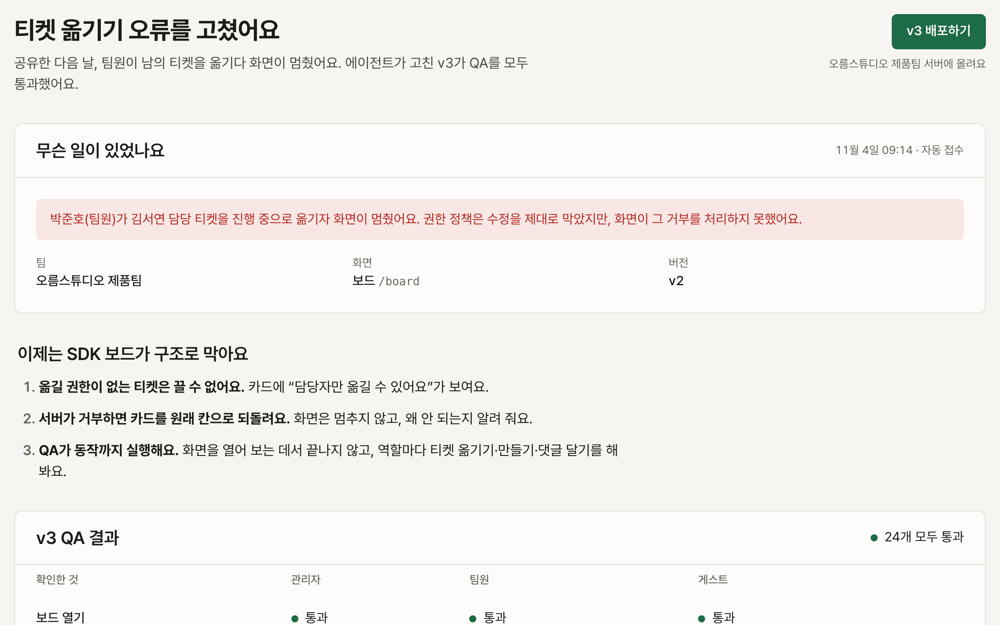
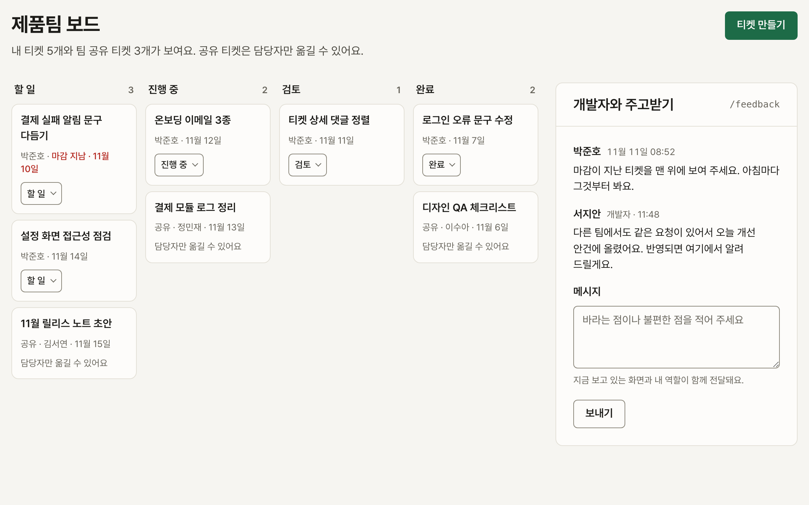
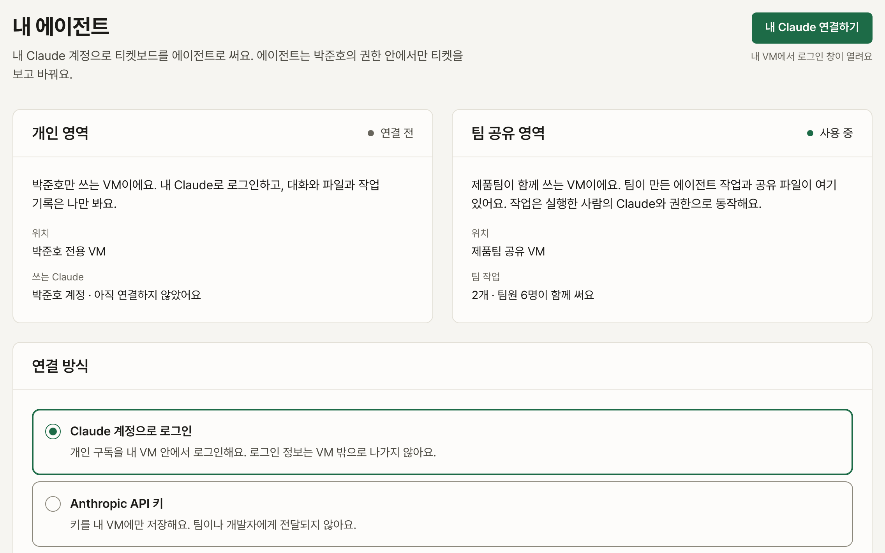
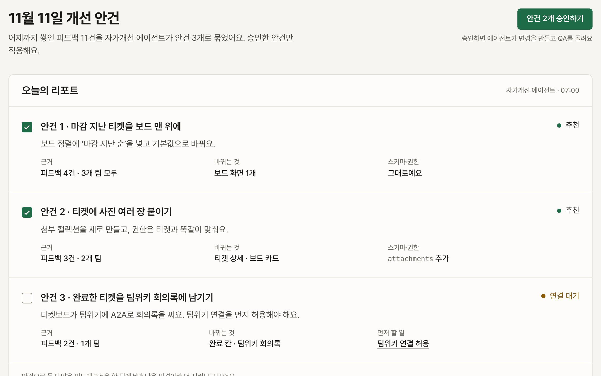
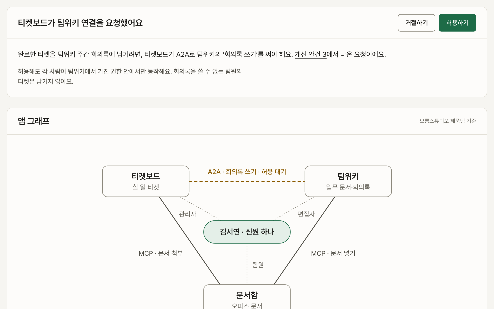

작은 앱이 고객과 함께 자라는 이야기
에이전트가 진짜 고객을 만나려면 더 니치해져야 해요. 빌더가 니치한 고객 한 팀에 집중하려면, 만든 것을 내놓는 비용이 낮아야 해요. 그래서 소규모 소프트웨어를 위한 클라우드, Kelay를 만들었어요.
- 서지안
- 빌더. 팀 할 일을 관리하는 티켓보드를 만들어요.
- 박준호
- 오름스튜디오 제품팀 팀원. 티켓보드를 매일 써요.
- 김서연
- 같은 팀 관리자. 팀 티켓 전체를 봐요.
1막 만들기는 쉬운데, 내놓기는 어려워요
-

1 한 단락으로 앱이 생겨요
“팀 할 일을 티켓으로 관리하고 싶어요.”
설명 한 단락으로 보드, 티켓 상세, 내 티켓, 팀 설정 화면이 생겨요. 서버 코드는 한 줄도 쓰지 않아요.
그런데 지금은 모든 팀원이 모든 티켓을 봐요.
-

2 말로 적은 규칙이 권한 정책이 돼요
“내 티켓만 보고 싶어요.”
서지안이 규칙을 말로 적으면 에이전트가 표에서 바꿀 칸을 제안해요. ‘이 사람으로 보기’로 박준호에게 티켓 8개만 보이는 것을 확인하고 적용해요.
이제 팀에 내놓을 차례예요.
-

3 버튼 하나로 팀에 공유해요
“만든 걸 바로 팀에 주고 싶어요.”
오름스튜디오 제품팀 전용 서버가 생기고 초대 링크가 열려요. 서버를 고르거나 설정할 것은 없어요.
다음 날 아침, 박준호가 티켓을 옮기다 화면이 멈춰요.
-

4 같은 오류는 구조로 막아요
“티켓을 옮기니까 화면이 멈췄어요.”
오류는 자동으로 접수되고, 에이전트가 고친 v3가 QA를 통과해요. SDK 보드는 옮길 권한이 없는 티켓을 아예 끌 수 없게 하고, QA는 이제 역할마다 티켓 옮기기까지 실행해요.
팀원들이 매일 쓰기 시작해요.
2막 고객이 쓰기 시작해요
-

5 쓰던 화면에서 바로 말해요
“마감이 지난 티켓을 맨 위에 보여 주세요.”
박준호는 보드를 떠나지 않고 /feedback으로 요청해요. 보고 있던 화면과 역할이 함께 전달되고, 서지안의 답장도 같은 자리에 와요.
반복되는 일은 에이전트에게 맡기고 싶어져요.
-

6 내 Claude가 내 권한으로 일해요
“내 Claude로 티켓 정리를 맡기고 싶어요.”
박준호 전용 VM에서 자기 Claude로 로그인해요. 개인 영역은 나만 보고, 팀 공유 영역에서는 팀 작업이 돌아요. 에이전트는 박준호가 볼 수 있는 티켓만 보고 바꿔요.
그 사이 세 팀에서 피드백이 계속 쌓여요.
3막 앱이 스스로 나아지고, 서로 이어져요
-

7 매일 아침 개선 안건을 받아요
“피드백이 쌓이는데 다 읽을 시간이 없어요.”
쌓인 피드백 11건을 자가개선 에이전트가 안건 3개로 묶어 리포트로 보내요. 서지안은 안건 2개를 고르고 승인만 눌러요.
세 번째 안건은 팀위키와 이어져야 풀려요.
-

8 작은 앱들이 이어져 함께 자라요
“위키랑 문서함도 만들었는데, 같이 쓰고 싶어요.”
티켓보드, 팀위키, 문서함이 MCP와 A2A로 이어져요. 팀원은 신원 하나로 세 앱에 들어가고, 앱마다 권한 정책은 그대로 지켜져요. 연결을 허용하면 완료한 티켓이 회의록에 남아요.
단순하게 만들려고 포기한 것
Kelay 위의 빌더는 아래 일을 하지 않아요. 덕분에 규모를 늘리는 고민 없이, 팀이 함께 쓰는 에이전트 서비스를 바로 내놓을 수 있어요.
- 멀티테넌시 운영. 고객 팀마다 전용 서버를 따로 둬요.
- RLS를 넘어서는 권한 설계와 보안 운영
- 밀리초 단위의 성능 최적화
- Next.js SDK 밖의 기술 스택 선택